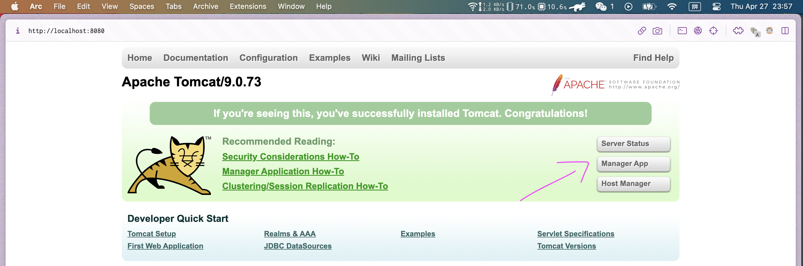
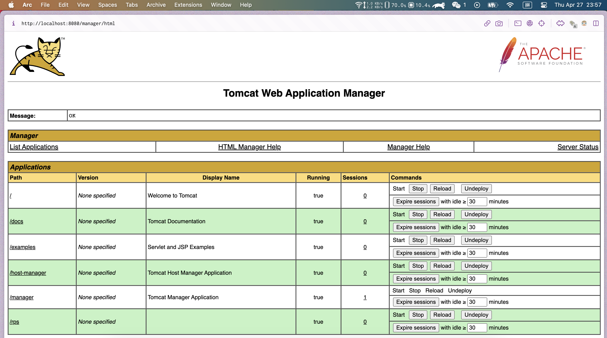
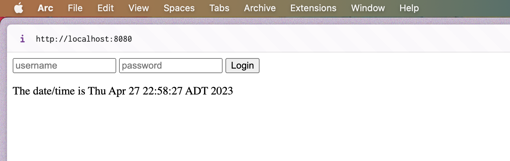
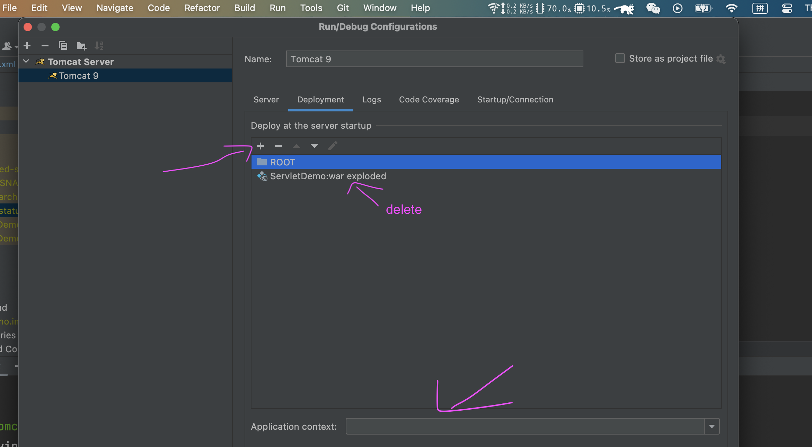
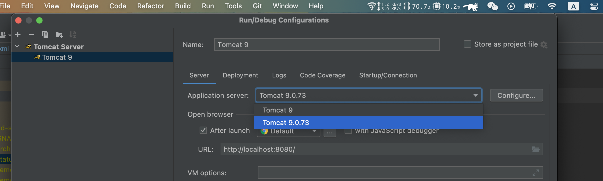
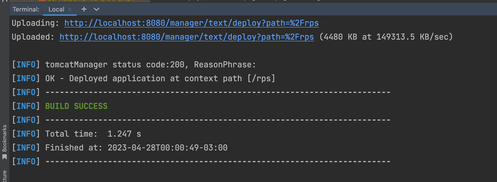
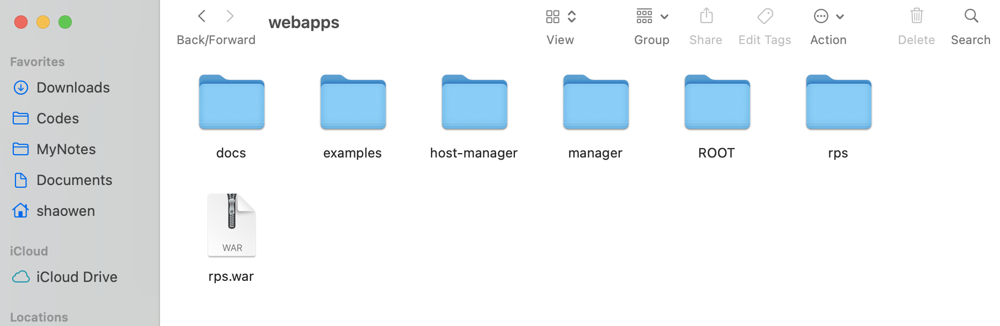
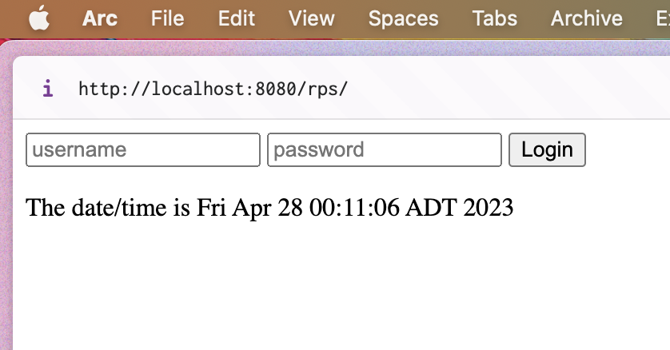

手动部署War包到Tomcat之何为War
Contents
Web application resources or web application archives are commonly called WAR files. A WAR file is used to deploy a Java EE web application in an application server. Inside a WAR file, all the web components are packed into one single unit. These include JAR files, JavaServer Pages, Java servlets, Java class files, XML files, HTML files, and other resource files that we need for web applications. We can use the Maven WAR plugin to build our project as a WAR file.
Step 1: Add a new user with deployment rights to Tomcat
To perform a Maven Tomcat deploy of a WAR file you must first set up a user in Tomcat with the appropriate rights. You can do this with an edit of the tomcat-users.xml file, which can be found in Tomcat’s conf sub-directory. Add the following entry inside the tomcat-users tag:
|
|
Save the tomcat-users.xml file and restart the server to have the changes take effect.
重启Tomcat就是进到Tomcat的bin目录下, 执行startup.sh, ./shutdown.sh, 其实你直接使用startup.sh命令开启Tomcat服务就会加载配置文件了, 上面说的重启是默认你的Tomcat一直处于运行状态. 现在你也应该启动Tomcat服务了, 启动后尝试访问http://localhost:8080/,

点击后输入上面的username和对应的password, 即可进入管理页面如下:

无法访问 tomcat 主页问题
我在访问Tomcat主页出现了问题, 访问的总是我以前的JSP应用, 我用IDEA开发的, 但我都没打开IDEA, 仍然可以访问到, 真是奇了怪了, 如下:

然后我就查到了一个博客说需要将Tomcat的首页的工程部署到Tomcat服务器上，我们通过IDEA来操作, 部署步骤如下：
选择菜单栏“Run–>Edit Configuration…–>Deployment”, 选择右上角绿色“+”，选择“External Source…”，将Apache-tomcat的webapps目录下的ROOT文件夹添加进来, 下面的Application Context 空着, 删除 ROOT 下面的那个ServletDemo:war exploded, 如下图:

然后我IDEA上选择的Tomcat服务器不是我现在用的, 我有个旧的Tomcat服务器, 我不知道, 然后IDEA用的一直是那个旧的(但我在上面部署位置的ROOT文件夹选择的是新的Tomcat下的文件), 所以就导致就算部署项目后, 我依然无法访问Tomcat的主页. 所以检查一下你是否选择了正确的Tomcat服务器,

这样配置好后再在IDEA点击运行, 就可以通过http://localhost:8080/访问 Tomcat 主页了, 之后你关闭IDEA, 直接进入Tomcat根目录的bin下通过执行startup.sh来启动Tomcat.
有时候你会遇到其他情况, 比如8080端口被占用, 这时候解决办法也很简单
|
|
说了那么多终于要进行下一步了,
Step 2: Tell Maven about the Tomcat deploy user
After you add the war-deployer user to Tomcat, register that username and password in Maven, along with a named reference to the server. The Maven-Tomcat plugin will use this information when it tries to connect to the application server. Edit the settings.xml file and add the following entry within the <server> tag to create the named reference to the server:
|
|
注意, 上面提到的
settings.xml文件在Downloads/apache-maven-3.9.1/conf下, 根据你的maven安装目录查找,另外这里加的账号密码就是上面在Tomcat添加用户时候的账号密码, 这是因为你进入Tomcat管理页面的时候需要,如果你不提供(下面配置
pom.xml也会说到), 那生成war文件的时候maven就会报错,
Step 3: Register the tomcat7-maven-plugin in the POM
把打包格式改成war, 即在pom.xml中找到<packaging>标签, 没有的话添加一个, 与<dependencies>标签并列:
|
|
Now that Maven and Tomcat are configured, the next step is to edit the Java web application’s POM file to reference the Tomcat Maven plugin.
|
|
运行mvn install tomcat7:deploy生成war的时候总是报错(如果你之前已经生成了War文件, 请记得去Tomcat根目录下的webapp目录下删除一生成的war文件, 否则也会报错, 和下面一样):
|
|
加入我们在Tomcat Users里配置的账号密码:
|
|
注意: 修改
pom.xml后需要更新pom.xml提示: 点击IDEA软件的右上角有个浮动的更新小按钮即更新, 或者你可以查查命令行maven怎么更新
pom.xml文件.
然后重新运行mvn install tomcat7:deploy, 成功:

然后去Tomcat根目录的webapps下查看生成的War, 可以看到生成了名为rps的web应用, 即这个名字取决于上面pom.xml填的内容,

然后我们对比一下生成的war与我们的源代码文件结构:
|
|
对于生成的War文件可以发现所有Java相关的文件都在WEB-INF下, 比如我们编写的Servlet字节码文件和和我们用到的依赖(gson, mysql connector, log4j). 然后仔细看源代码文件结构, 在webapp下也有个WEB-INF, 这下面放的就是我们项目的web.xml, 内容如下(所以这有什么联系呢),
|
|
FInal Step: Verify
确保你已经开启Tomcat服务(即使你关闭了IDEA, IDEA和Tomcat是两个东西, IDEA是个IDE会用到Tomcat作为web服务器来部署web app), 然后访问通过http://localhost:8080/访问到Tomcat主页, 这时候你可以在链接🔗后加上/rps即http://localhost:8080/rps/就可以进入到你的那个web网页, 如下:

思考总结
这时候其实我们也就知道了什么是根目录和url中神秘的路径问题, 你看我们若想访问manager页面, 这个页面的url是http://localhost:8080/manager/, 我们访问我们刚部署的页面是http://localhost:8080/rps/, 你看最后的这个路径及/manager, /rps都是tomcat的webapps目录下的文件, 如下:
|
|
所以webapp就是所谓的根目录, 我们访问什么都是根据它来的, 可以看到, webapps目录下还有examples等文件夹, 所以我们可以直接通过http://localhost:8080/example/访问. 但是又有个问题, Tomcat的主页也就是是http://localhost:8080/具体在哪呢? 按理说webapps下应该有个index.html文件呀, 可是却空空, 这是怎么回事, 怎么没有按我们上面推导的路径来呢?
还记不记得当时学习servlet的时候有个web.xml文件, 我们在这个文件里可以配置个welcome标签, 通过这个标签我们就可以直接指定一个html文件作为我们的主页而不是根目录下的index.tml文件, 同样, Tomcat当然也有这个文件 TOMCAT_HOME/conf/web.xml, 搜索welcome找到啦(在tomcat/webapps/ROOT/index.jsp):
|
|
然后怎么覆盖这个home page呢? 刚好看到了下面这个回答, 看来和我们猜想的一样, 如下:
In any web application, there will be a web.xml in the WEB-INF/ folder. (别忘了我们之前学习JSP的时候可没少在这个文件夹花时间去配置servlet name和对应的jsp, 每创建一个新的servlet就要在这创建个新的servlet pattern)
If you dont have one in your web app, as it seems to be the case in your folder structure, the default Tomcat web.xml is under TOMCAT_HOME/conf/web.xml
Either way, the relevant lines of the web.xml are
|
|
so any file matching this pattern when found will be shown as the home page.
In Tomcat, a web.xml setting within your web app will override the default, if present.
Further Reading: How do I override the default home page loaded by Tomcat?
参考:
Author David
LastMod 2023-04-27